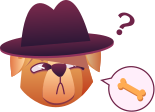

Мой словарь
Выученные слова для статистики и теста.
0
всего
0
ок
0
не пройдено
Начать тестирование
Ошибка в тесте пометит слово красным и добавит в «Ошибки».

Пока пусто — слова появятся после верных ответов в уровнях, изучении слов или из «Повторить».